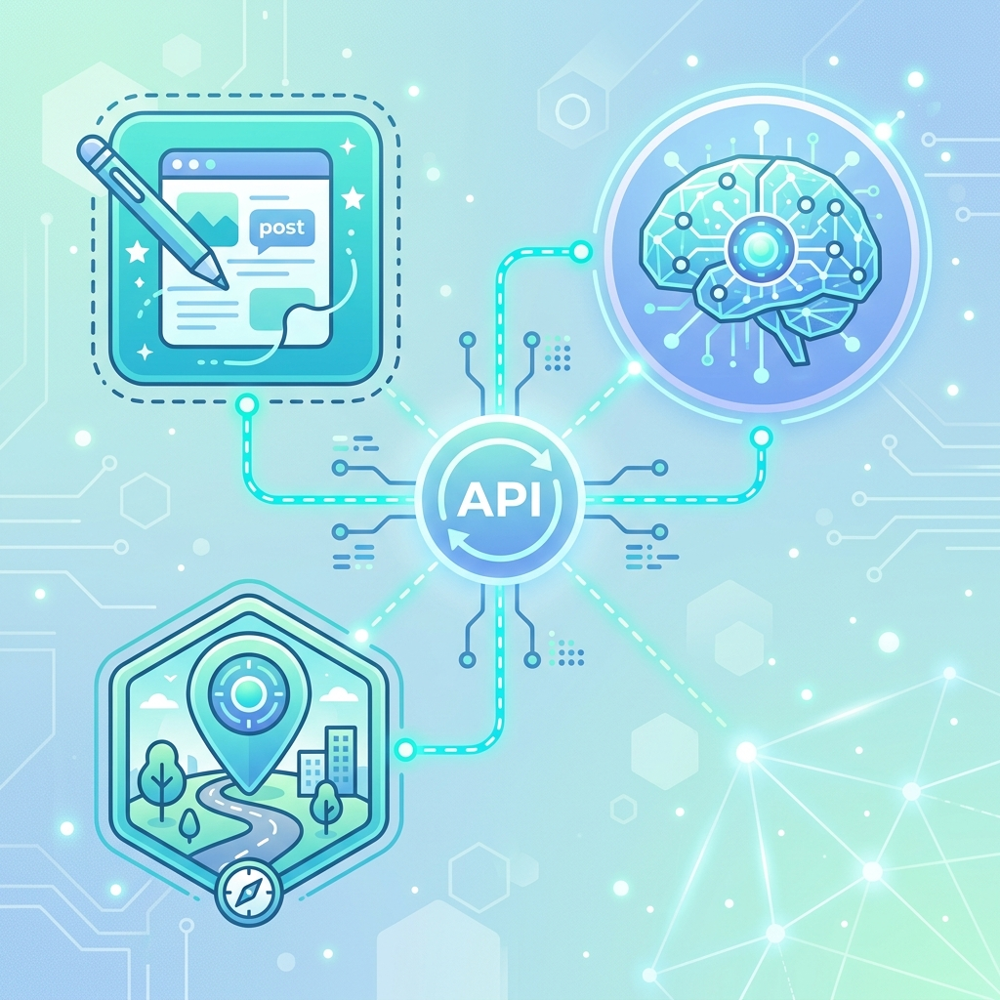

1. システム概要
本システムは、宮古島を訪れる観光客へ向けて、トレンドを押さえた質の高いドライブガイド記事を「AI（Gemini 3.5 Flash）」が自動執筆し、そのままWordPressへ下書き投稿するWebアプリケーションです。
💡 本ツールの主なメリット
- 最新トレンド自動調査: 最新のオープン店舗や地元のフェス情報をAIがネットから自律検索して記事化。
- アイキャッチ画像自動合成: 選定された宮古島の実写写真に、記事タイトルを自動で文字入れした高画質バナーを自動生成。
- Googleマップ写真の自動差し込み: 紹介スポットの見出し直後に、現地の写真を自動で挿入。
- ハッシュタグの自動登録: 記事内で紹介した地名やお店の名前をハッシュタグ（WordPressタグ）として自動登録。

2. アプリの基本的な使い方
ブラウザでアプリを開き、「📝 記事生成」タブから記事を自動生成します。執筆モードには以下の2通りがあります。
A. 🎯 テーマ指定モード（自分でキーワードを決める場合）
-
1
執筆条件の入力
書きたい記事の「タイトル（テーマ）」と「主要キーワード」、および「関連キーワード（複数可）」を手動で入力します。 -
2
生成オプションの選択
「Googleマップ写真を自動で挿入するか」「アイキャッチを自動取得するか」「投稿を公開か下書きにするか」のオプションにチェックを入れます（基本はそのままで構いません）。 -
3
生成の実行
画面下部の「🚀 この内容で記事を自動生成してWordPressに保存する」をクリックします。
B. 🔥 トレンドリサーチモード（完全にAIにおまかせする場合）
-
1
ジャンルの選択
調べたいジャンル（グルメ・観光スポット・体験・すべて等）を選択します。 -
2
自動リサーチ＆執筆の実行
実行ボタンを押すと、AIがネット検索ツールを駆使し、2026年現在の宮古島の新名所や最新イベントを自動的に調べて魅力的なテーマを決め、記事を自動生成します。
💡 記事完成後の確認方法
記事の投稿に成功すると、完了時に「👉 WordPressの投稿（編集画面）を開く」という青いリンクが表示されます。そこをクリックすると、即座にWordPressの編集プレビュー画面へ移動し、完成した内容を確認・手直しして公開することができます。
3. 優先スポット写真の登録（自社画像・スマホ画像対応）
AIが記事内に特定の観光地やお店（例：「宮古島レンタカー」など）を登場させた際、ネット上の写真ではなく、あらかじめ用意した指定写真（スタッフの実写写真など）を優先して記事内に自動挿入させる機能です。
-
1
「📷 スポット画像登録」タブを開く
画面上部の2番目のタブを開きます。 -
2
地名の入力と写真のアップロード
適用させたい「正確なスポット名・お店の名前（例：宮古島レンタカー）」を入力し、スマートフォンやPCの写真フォルダから画像をアップロードします。 -
3
優先画像として保存
保存すると、画面下部の一覧に登録されます。以後、AIがそのスポットを紹介した際に自動でこの画像が記事内に差し込まれます。
4. WordPress連携の設定手順
自動生成した記事をWordPressへ自動投稿するためには、WordPressの「アプリケーションパスワード」が必要です。一般のログインパスワードは安全のため使用できません。
-
1
WordPressの管理画面にログイン
ブログの管理者権限で管理画面に入ります。 -
2
プロフィール画面を開く
左メニューから「ユーザー」＞「プロフィール」（自分自身のアカウント）を開きます。 -
3
アプリケーションパスワードの追加
画面の一番下までスクロールし、「アプリケーションパスワード」セクションを見つけます。 -
4
名前を入力してパスワードを発行
「新しいアプリケーションパスワード名」に任意の識別名（例：auto-blog-app）を入力し、「新しいアプリケーションパスワードを追加」ボタンをクリックします。 -
5
パスワードを保存
画面上にxxxx xxxx xxxx xxxx xxxx xxxxのような24桁のアルファベットのパスワードが1度だけ表示されます。これをそのままコピーして手元に保存してください。
⚙️ システム設定タブへの入力内容
| 項目名 | 入力する値の例 |
|---|---|
| WordPress URL | https://miyakojima-rentacar.net/article （末尾に /wp-admin は含めない） |
| WordPress ユーザー名 | WordPressのログインID（ユーザー名） |
| アプリケーションパスワード | コピーした24桁の文字列（スペースを含んでいてもそのままで大丈夫です） |
5. Gemini APIキーの取得方法（AIの頭脳）
記事の文章を執筆し、各種検索を行うためのAI頭脳である「Gemini」のアクセスキーを取得します。
-
1
Google AI Studio にアクセス
ブラウザで Google AI Studio を開きます（Googleアカウントでのログインが必要です）。 -
2
APIキーの作成を開始
左上、または画面中央にある青いボタン「Get API key」をクリックします。 -
3
新規APIキーを作成
「Create API key」ボタンをクリックします。 -
4
プロジェクトの選択・キー生成
「Create API key in new project」（新プロジェクトでキーを作成）を選択すると、APIキーが生成されます。 -
5
キーのコピー
AIzaSy...から始まる長大な文字列が表示されるので、コピーしてアプリの「システム設定」タブに入力します。
⚠️ 無料枠の利用上限（クォータ）について
無料のAPIキーは**1日20回までの生成リクエスト**に制限されています。テストで上限を超えてしまった場合は、翌日まで待つか、別のアカウント（別のGmailアドレスなど）で新しく無料キーを発行して差し替えてください。
本格的に毎日多く利用したい場合は、Google AI Studioのメニューから「Billing（請求設定）」を開き、クレジットカード情報を登録して従量課金プラン（Pay-as-you-go）に移行することで、利用制限をほぼ解除できます（費用は1回の記事生成で数円〜十数円程度と極めて低価格です）。
5-2. Claude (Anthropic) APIキーの取得方法（AIの頭脳・もう一つの選択肢）
記事の執筆に高品質なAIモデル 「Claude Sonnet 4.6」 を使用するために必要となるAPIキーの取得手順です。Claudeは表現力豊かで自然な日本語の記事作成に優れています。
※Claudeを使用するには、アカウントへの事前チャージ（クレジットチャージ）が必要です。Geminiのような完全な無料プランはありませんのでご注意ください。
-
1
Anthropic Consoleにログイン
Anthropic Console (https://console.anthropic.com/) にアクセスし、Googleアカウントまたはメールアドレスでログイン（またはサインアップ）します。 -
2
クレジットのチャージ（必須）
画面上の「Billing（請求設定）」を開き、クレジットカードを登録の上、最低5ドル（約800円〜）からのクレジットをチャージ（購入）します。ClaudeはAPIキーを作成するだけでは使えず、チャージ済みの残高が残っている必要があります。 -
3
APIキーの作成
メニューから「API Keys」を選択し、画面中央の「Create Key」ボタンをクリックします。 -
4
名前の設定とコピー
キーに判別しやすい名前（例:Miyakojima-Blog-Generator）を付け、「Create key」を選択します。画面上にsk-ant-api...から始まる長大な文字列が表示されるので、コピーしてアプリの「システム設定」タブに入力します。
💡 トレンドリサーチ機能でのハイブリッド連携
Claudeは自身でGoogle検索を行うことができません。しかし、本アプリで「トレンドリサーチモード」を選択した場合は、ネット検索のみGeminiが行い、そこでリサーチされた情報を元にClaudeが記事を執筆する『ハイブリッド方式』で動作します。そのため、トレンドリサーチモードをClaudeで動かすためには、GeminiとClaudeの両方のAPIキーが必要になります。
6. Google Maps APIキーの取得（観光地写真用：任意）
AIが記事中に地名や観光地を紹介した際、自動的にその場所の美しい写真をGoogleマップ上から取得して記事内に埋め込むために使用します。※設定しない場合は写真なしでテキストのみが作成されます。
-
1
Google Cloud Consoleを開く
Google Cloud Console にログインします。 -
2
プロジェクトを作成
初めての場合は「新しいプロジェクトを作成」し、任意の名前を設定します。 -
3
請求先アカウントの有効化（必須）
GoogleマップのAPIを使用するためには、Google Cloudのプロジェクトに対してクレジットカードの登録（お支払い設定）を必ず行う必要があります（一定の毎月無料枠があるため、個人開発の範囲であればほぼ料金はかかりません）。 -
4
Places APIの有効化
メニュー ＞「APIとサービス」＞「ライブラリ」から、「Places API (New)」を検索し、有効化（Enable）します。 -
5
APIキーの作成
メニュー ＞「APIとサービス」＞「認証情報」をクリックし、画面上の「＋認証情報を作成」＞「APIキー」を選択してキーを生成します。このキーをアプリの設定に入力します。
7. Unsplash APIキーの取得（アイキャッチ自動取得用：任意）
自社フォルダに実写の画像素材がないとき、Unsplashという高品質フリー画像サイトからテーマに合わせた宮古島や海の写真を自動検索・ダウンロードして、タイトル加工するために使用します。※設定しない場合は、実写画像フォルダからのみランダムに選ばれます。
-
1
Unsplash Developerを開く
Unsplash Developers にログイン・ユーザー登録します。 -
2
アプリケーションを作成
ダッシュボードから「Your Apps」＞「New Application」をクリックします。規約を確認してチェックを入れます。 -
3
Access Keyのコピー
作成したアプリケーションのページを開き、下部に表示される 「Access Key」 をコピーしてアプリの設定に入力します。
8. Streamlit Cloudへの配置設定（デプロイとSecrets）
GitHubへ最新のコードをプッシュすれば自動的にStreamlit Cloud上のWebアプリも更新されますが、APIキーなどの個人情報をクラウド環境で安全に保持するため、Streamlitの「Secrets」管理画面を設定する必要があります。
-
1
Streamlit Cloudの管理ダッシュボードを開く
アプリの設定メニューから管理画面に入ります。 -
2
Secretsを開く
該当アプリの「Settings」アイコンをクリックし、左メニューから「Secrets」を選択します。 -
3
TOML形式で接続情報を入力
以下の枠内の形式をコピーし、各値を実情報に書き換えてテキストエリアに入力し、「Save」を押します。
# Streamlit Cloud専用の設定値 (Secrets)
GEMINI_API_KEY = "あなたのGemini-APIキー（AIzaSy...）"
WP_URL = "https://miyakojima-rentacar.net/article"
WP_USERNAME = "あなたのWordPressユーザー名"
WP_PASSWORD = "発行したアプリケーションパスワード（24桁の英字）"
UNSPLASH_ACCESS_KEY = "UnsplashのAccessKey（設定しない場合は空欄で可）"
GOOGLE_MAPS_API_KEY = "Google Maps APIキー（設定しない場合は空欄で可）"🔒 セキュリティについて
この「Secrets」に入力した値は、一般のブラウザやGitHub上からは決して見えないようにStreamlit Cloud側で高度に暗号化されて安全に管理されます。
9. トラブルシューティング（よくある不具合と対策）
❓ アプリの画面に「ImportError」や真っ赤なエラー画面が出る
対策: クラウド反映時の読み込みラグや古いキャッシュが原因です。画面右下の「Manage app」から、アプリメニューの「Reboot app」（再起動）を実行してください。最新のコードが正しく再読み込みされます。
❓ 記事生成を実行すると「429 Resource Exhausted」と出る
対策: 無料枠のGemini APIの上限（1日20回）に達しました。翌日まで待つか、別アカウントでGoogle AI Studioから無料キーを新規取得して「システム設定」から入れ替えてください。本格的な運用にはクレジットカード登録による有料枠（従量課金プラン）への移行を推奨します。
❓ WordPress投稿後に「API接続エラー」や「ステータスコード: 401」と出る
対策: WordPressのアプリケーションパスワード、またはユーザー名が正しくありません。パスワードにスペースが含まれる場合は、スペースを抜かさずにそのまま（あるいはコピペで）入力してください。また、WordPress側でユーザー情報やセキュリティプラグインによってREST APIの接続が制限されていないかご確認ください。
❓ Googleマップの写真が記事の中に全く挿入されない
対策: Google MapsのAPIキーが正しく設定されていないか、Google Cloud側でお支払い設定（クレジットカード登録）が完了していない、または「Places API (New)」の有効化が忘れている可能性があります。Google Cloud Consoleの設定を再度ご確認ください。